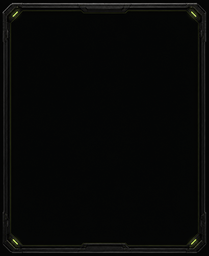

NIGHTGLASS / REVENANT
A quieter frame for everything else.
The home face keeps its skull. App screens get a slim gunmetal edge, dim green corner lights, and an uninterrupted dark center.

<
APPS
ALARM
TIMER
STOPWATCH
SETTINGS
ACTIVITY
Apps
No skull competing with the menu. Opaque controls keep the same contrast and spacing.
<
TIMER
COUNTDOWN
00:05:00
DURATION
START
RESET
Visual + audio timer alert
Timer
The time and primary action lead. The surrounding glass stays almost black.
<
QUICK SETTINGS
BRIGHTNESS 60%
SOUND ON
DO NOT DISTURB OFF
BLUETOOTH ON
Scheduled quiet hours are configured in Alarms.
Quick Settings
The same quiet edge would carry across the system's currently plain control panel.